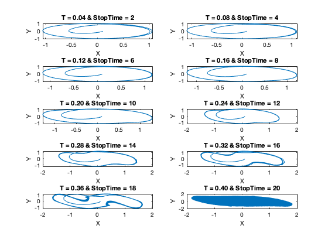
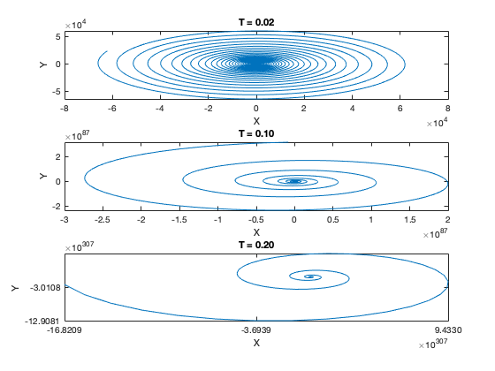

Contents
disp('Decided to simulate two different systems using various values for the timestep and AB2 as the integrator')
Decided to simulate two different systems using various values for the timestep and AB2 as the integrator
SYSTEM 1
clc; close all; clear all;
figure;
for j = 1:10
startTime = 0;
stopTime = 2*j;
steps = 50000;
T = (stopTime - startTime)/50;
t = linspace(startTime, stopTime, steps);
x = zeros(1, length(t));
y = zeros(1, length(t));
fx = zeros(1, length(t));
fy = zeros(1, length(t));
x(1) = 0.1;
y(1) = 0.005;
fx(1) = y(1);
fy(1) = y(1)*(1 - x(1)^2 - y(1)^2) - x(1);
x(2) = x(1) + T*fx(1);
y(2) = y(1) + T*fy(1);
for k=3 : steps
fx(k-1) = y(k-2);
fy(k-1) = y(k-2)*(1 - x(k-2)^2 - y(k-2)^2) - x(k-2);
x(k) = x(k-1) + (3*T)./(2)*fx(k-1) - (T/2)*fx(k-2);
y(k) = y(k-1) + (3*T)./(2)*fy(k-1) - (T/2)*fy(k-2);
end
subplot(5,2,j)
t1 = sprintf("T = %0.2f & StopTime = %i", T,stopTime);
plot(x, y)
xlabel('X')
ylabel('Y')
title(t1)
end

System 2
stopTimeArr = [1, 5, 10];
figure;
for j = 1:3
startTime = 0;
stopTime = stopTimeArr(j);
steps = 20000;
T = (stopTime - startTime)/50;
t = linspace(startTime, stopTime, steps);
x = zeros(1, length(t));
y = zeros(1, length(t));
fx = zeros(1, length(t));
fy = zeros(1, length(t));
x(1) = 20;
y(1) = 10;
fx(1) = y(1);
fy(1) = -x(1);
x(2) = x(1) + T*fx(1);
y(2) = y(1) + T*fy(1);
for k=3 : steps
fx(k-1) = y(k-2);
fy(k-1) = -x(k-2);
x(k) = x(k-1) + (3*T)./(2)*fx(k-1) - (T/2)*fx(k-2);
y(k) = y(k-1) + (3*T)./(2)*fy(k-1) - (T/2)*fy(k-2);
end
subplot(3,1,j)
t1 = sprintf("T = %0.2f", T);
plot(x, y)
xlabel('X')
ylabel('Y')
title(t1)
end
